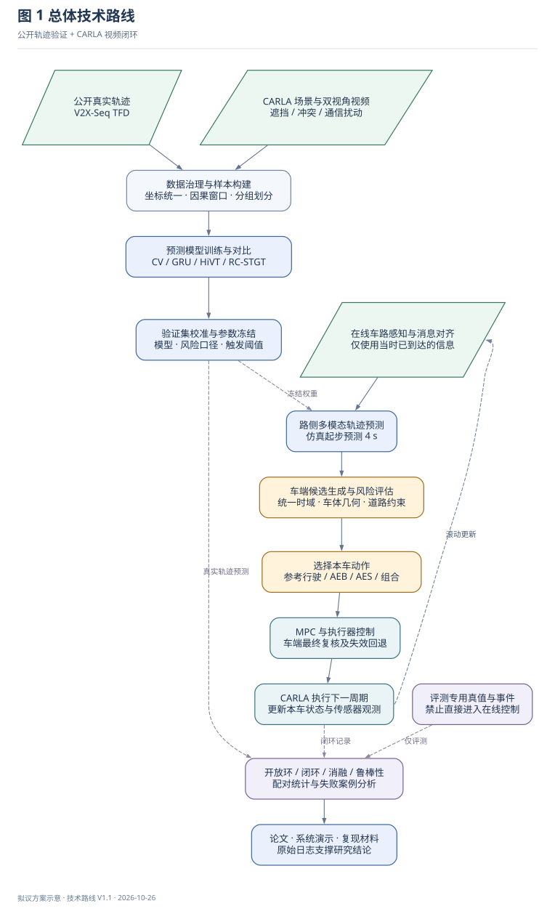
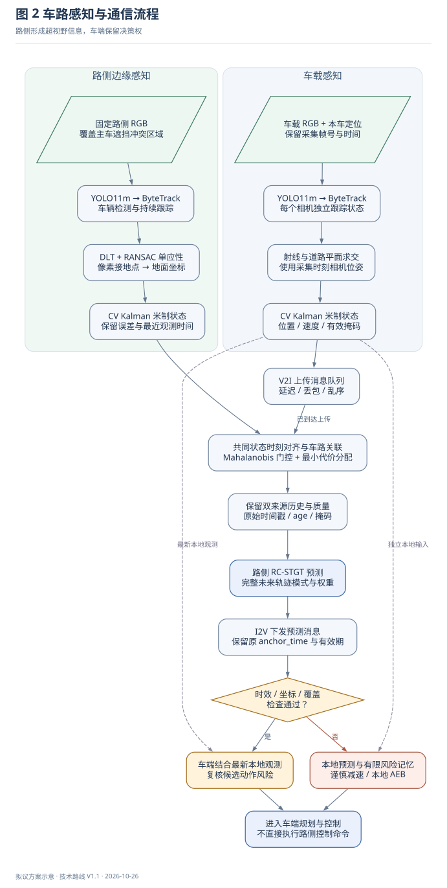
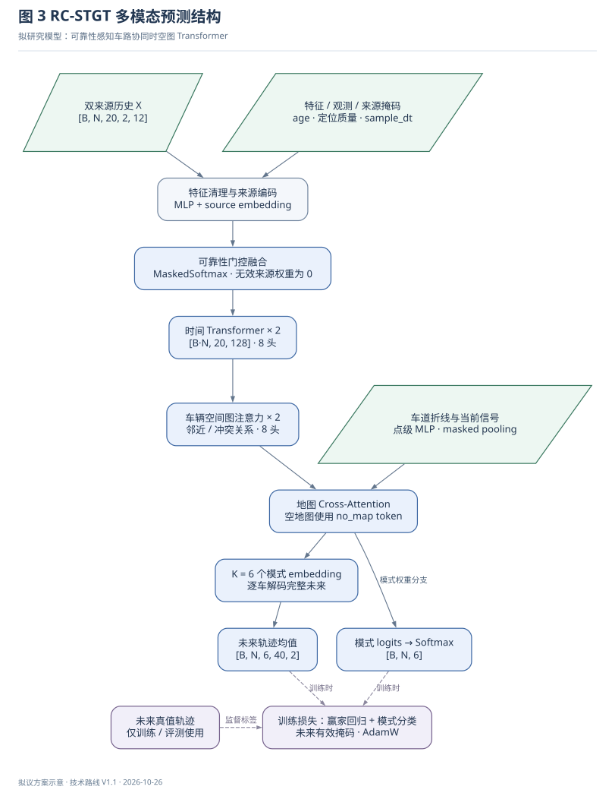
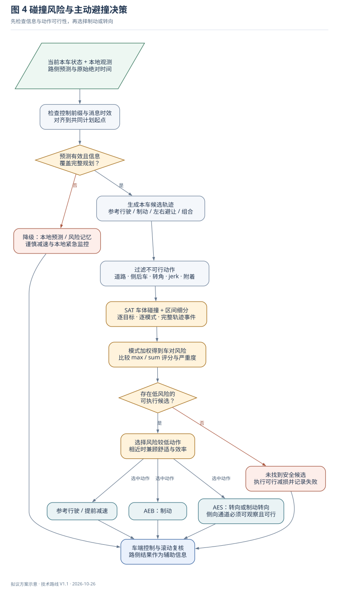
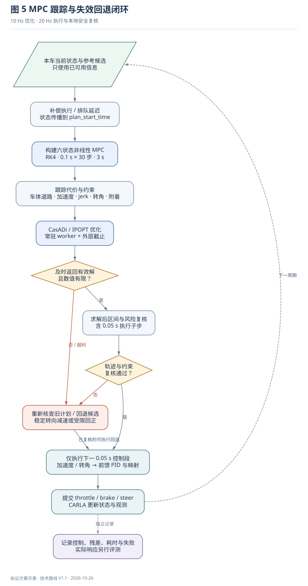
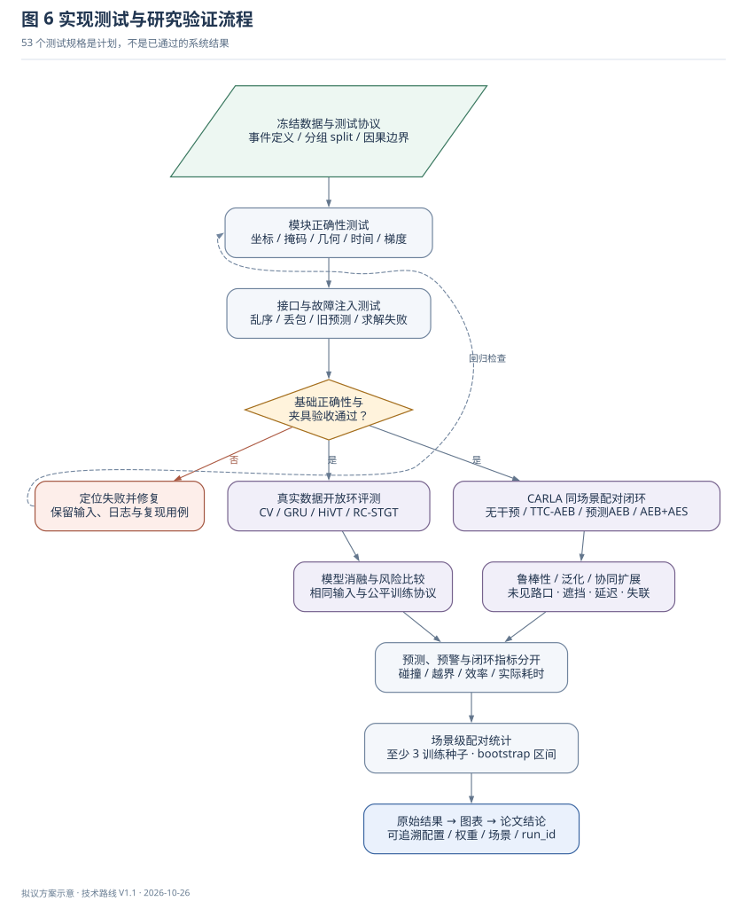

超视野车路协同主动避撞 · 流程图集
6 张流程图对应现有研究方案，提供可编辑的 Mermaid / DOT 源码，以及适合论文和答辩材料的 SVG / PNG。图中参数为仿真起步设置，模型、控制和正式实验仍待实施。
桌面直接阅读；手机可在图内左右滚动。SVG 可独立打开继续放大，中文标签保留为可检索文字。
总体技术路线
真实轨迹与仿真视频分别提供证据。在线避撞只使用已可用观测；仿真真值进入训练标签与独立评测。



依据：技术路线 1、4、15、16 节；研究方案 3、9、11 节。拟议方案，不表示已完成实验。
车路感知与通信流程
V2I 上传与 I2V 下发分别模拟时延。目标暂时失联时保留有限风险记忆；本地回退无法凭空恢复从未观测到的盲区目标。



依据：技术路线 2、6、7、21.2–21.5 节。拟议方案，不表示已完成实验。
RC-STGT 多模态预测结构
形状以仿真起步配置表示，N 为可变车辆数。RC-STGT 为本项目工作名；HiVT 保留为独立基线。未来真值只监督训练损失。



依据：技术路线 8、9、21.6 节。拟议方案，不表示已完成实验。
碰撞风险与主动避撞决策
不同动作使用同一有效时域。离散车对风险按模式权重求和，多车 max/sum 为评分；不能把它们当作已校准的真实联合概率。



依据：技术路线 7、10、11、21.7–21.8 节。拟议方案，不表示已完成实验。
MPC 跟踪与失效回退闭环
六状态为 [x,y,ψ,v,a,δ]，控制为 [jerk,转角速率]。外层截止、节点间约束和求解后风险复核均需实现；MPC 本身不保证必然避撞。



依据：技术路线 12、21.9、22.4 节。拟议方案，不表示已完成实验。
实现测试与研究验证流程
公开日志用于轨迹预测与声明的风险代理，控制收益由仿真配对实验验证。指标、失败运行和统计区间均保存，不能用单次视频代替证据。



依据：技术路线 4、15、16、22、23 节。拟议方案，不表示已完成实验。